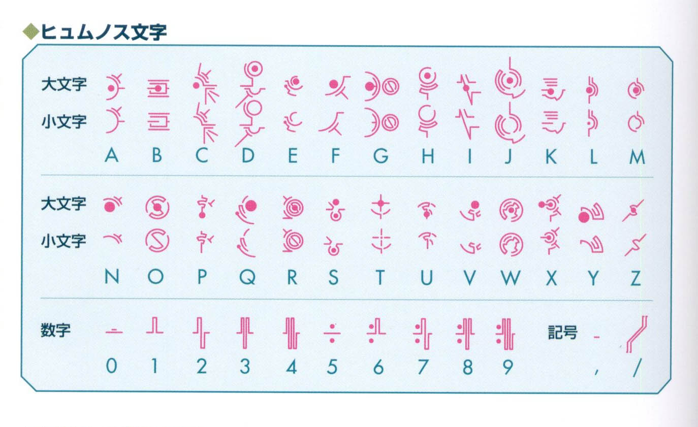
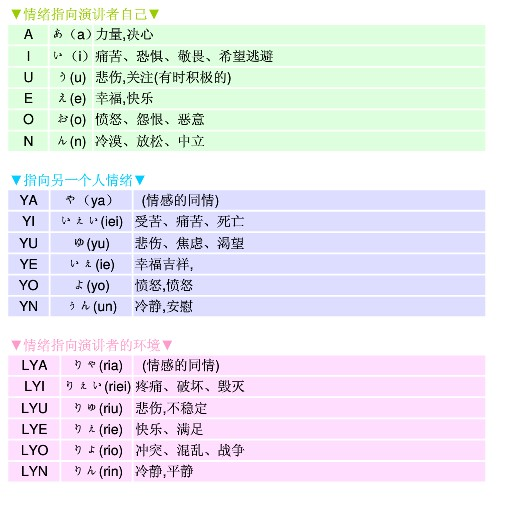
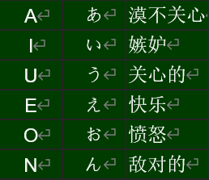

Hymmnos 塔语¶
约 10873 个字 预计阅读时间 36 分钟
无意之间发现了塔语的歌，觉得好汀，实际上早在warma那就知道了塔语。但一直没有太过在意，感觉挺好玩的。那就来系统上的学习一下吧。
一. 塔语介绍¶
1. 塔语的由来¶
塔语，亦称hymmnos语，是由土屋晓（Akira Tsuchiya）创作的一种自制语言，用于游戏Ar tonelico（魔塔大陆）全系列中。在游戏中，该语言主要是作为诗魔法语言使用(hymmnos在游戏中的词义也正是“诗、诗歌”)。
游戏中的日常生活使用的是叫做Shell的其他语言(是不是感觉很熟悉)，Hymmnos对一般人来说则是古代语，也很少被诗魔法少女(レーヴァテイル)以外的人使用。诗魔法少女会使用该语言进行诸如咒文、隔壁操作、塔的管理等操作。
官方给出的词典并没有涵盖所有单词，且词汇大多与情感、神明、自然、信仰、救赎等有关。可以说是非常适合圣歌等祈祷的歌曲使用的。而在作品外大部分都是以拉丁字符所写的歌曲，但所表述的意义与原塔语无异，故而这种以拉丁字符所构成的塔语才是本文所讲的主要内容，不过过少的单词量难以用其进行日常语言的交流，但可以像游戏内一样做诗歌。
一般语言的情感表达是根据句调和音调来表达，而hymmnos语是根据想音来表达自己的情感，不需要借助说话者自身的语调。
Hymmnos的用途是构成咒文，使歌姬能与塔连接后，通过塔所供给的导力，实现自己的愿望。咒文分为下列3种：
- Hymmnos Extract – 用于对塔进行控制，使用时需要身份认证，只有拥有特定的Hymmnos code的歌姬可以使用。对于第一世代的Origin歌姬及第二世代的β-纯血种，都固定拥有特定的文字列hymmnos code。可以控制天气，重力，也有可以撼天动地的魔法，以及塔各种环境的控制，塔守卫者(Guardian)的控制等。游戏中的hymmnos即指的是Hymmnos Extract。
- Hymmnos Word – 也就是所谓的“诗魔法”，所有歌姬均可以使用，通过与自身的Cosmosphere连接，将自己的愿望具现化的过程。Word的多彩程度取决于歌姬自身内心的丰富程度。因此可以由歌姬创作，其威力取决于愿望表达的强烈程度及塔对愿望的回应，而不是具体的文字。
- Hymmnos Spell – 咒语，不能作为诗使用，其最大特征就是并不由歌姬歌唱，而是为了和歌姬或者塔进行连接，以及进行简单的控制时使用，文法与Word相同。属于在塔内已经预设好的文字列，因此每座塔均不同。人类和歌姬均可咏唱使用。常用于门禁认证，extract的下载等。
在游戏内，hymmnos语非常古老，早于第一纪时发现音魔法之前便已存在，祈祷师使用的一种被称为“月奏”的咒文便是其前身。在塔出现后，Hymmnos所具有的精确表达歌唱者情感的特点，成为最适合控制塔，与塔进行通信的语言，而被格式化成为hymmnos。随着hymmnos的发展，各地域各教派的单词及格式均发生了细微的变化。
2. 音律介绍¶
2.1 共通语（正纯律）¶
- Soul shell的塔管理局所认定的通用标准，未被认定的hymmnos并非无法控制该塔。因此往往会存在正纯律与其它律的混用情况。
2.2 古“月奏”律(クルトシエール律)¶
- 是古时祈祷师的咒文，是hymmnos的起点，现代大多已被忘记，留下的单词很少
2.3 Cluster律¶
- 第一纪时，行星的背面的soul cluster地区确立的音律。可以认为是正纯律的方言，实际效果差别不大。现在在ar-tonelico周围已不存在该律的使用者，但在世界的某处，可能还存在着使用该律的colony。
2.4 α律¶
- 世界仅有的三位歌姬Origin能在自己心中编织出的最优化的hymmnos单词，这样得来的单词即“α律”。但是没有通用性，在非该Origin管理的塔则无法发挥最大的威力，甚至由于其他塔没有所对应的机能而无效。其他律是在塔内既存的频谱上编织出所对应的单词，而α律则是塔的机能扩张后而编织的对应单词。
2.5 古metafalis律¶
- 第一纪初期，于2000年左右席卷世界的圣教国meta falis诞生的不同律。一个单词所拥有的音能远高于正纯律的平均值。诞生该高性能音律的土壤则是该地盛行的精神力至上思想。此地盛行使用月奏进行诗的修行及开发，不断磨练自己的精神，来编织出更强的诗。由于这种思想的盛行，阻碍了将诗科学化的进程，进入3000年代后文化急速落后。通过与Soul Shell的关系，将metafalis律录入了诗魔法Server。
2.6 新约パスタリエ¶
- 于3400年左右，在metafalis编织出的新言语。拥有被称为Infel-Phira的不同魔法Server，只有连接该Server的歌姬（I.P.D）才可使用。与其他语言，如文法与单词方面基本没有互换性。诗的运行命令也不是以EXEC_开头而是以METHOD_开头。但是通过塔的模拟功能，表面上其他律也可以使用，但在Infel-Phira内部则翻译为新约。文法则和其他hymmnos完全不同。
3. 语句分类¶
3.1 想音句¶
- Hymmnos中最基本的语句种类，具体参看想音句语法。
3.1.1 想音¶
- 构成想音句的一个成分，用以表达情感，简写为E.S.（emotion sound）。
3.2 感音句¶
- Hymmnos中另一种语句，和想音句有不同的语法，具体参看感音句语法。
3.2.1 感音动词¶
- 感音句中的核心动词，简写为E.V.（emotion verb）。
3.2.2 音律¶
- 音律是Hymmnos语里特有的现象，每个词有一个所属音律的分类，表明该词的年代或者地区，不同音律的词之间的可能会有冲突因此不能连用，具体详细的资料参看感音句语法。
3.3 班氏吟唱句¶
- 即Binasphere Chorus 的翻译，Binasphere原意是两个世界，Binasphere Chorus即双重合唱，不过考虑到接受程度最终选择了班氏吟唱句作为翻译。因为是音译所以并不是一个姓班的人创造的。
3.4 Carmena Foreluna¶
- 也写作 律史前月读（律史前月読 risshizentsukuyomi）严格来说不能算Hymmnos语，是在Hymmnos语出现之前（游戏世界观历史），用于占卜的声音。可以用于推知Hymmnos中单词的词源。
3.5 Ar-Ciela¶
- 星语，比Carmena Foreluna时间更早的行星间交流的语言，发声范围可以远超人耳的识别范围。
4. 省流版¶
Hymmnos语出自游戏魔塔大陆，意为诗歌，因此Hymmnos语又称为诗歌语，在游戏中作为诗魔法语言给诗魔法少女使用。 有想音句，感音句，班氏吟唱句等形式。
二. 塔语字母表¶
1. 字母表¶

2. 字型¶
Hymmnos文字的字形是与游戏世界中每个音的能量相关的。文字的中心是音源，然后在周围放置圆弧、垂直水平线、放射线等来构成一个完整的文字。这些放置的图案也是有意义的，圆弧表示安详的α波、垂直水平线表示紧张的β波、放射线表示刺激的γ波。
3. 组成¶
Hymmnos文字（数字和记号除外）与英文一样有26个字母，分为6大主音元素与20小素。
-
六大元音音素 六大主音元素是在英语元音字母的基础上加了N,即为A、I、U、E、O、N这六个字母。同时，这几个字母称为 A：力音|I：圣音|U：憎音|E：爱音|O：邪音|N：无音
-
二十小素 是除去6个主音元素后的所剩下的音。根据月奏们研究律史前月读时的发现，这些文字与日语存在对等意义，但目前这还不是一个完全确定的理论。另外，当文字互相组合时，它们的含义是可能产生变化的。
三. 一阶语法 想音句语法¶
1. 引子¶
大多数hymmnos语都来自于魔塔大陆世界的魔法咒语，所以其语言要讲究说话者的内心情感，却不是通过语调与句调，而是直接用词语来表现，下面我们看个例子。
-
例句：was yea ra chs hymmnos mea（想音句）
翻译：我很高兴将自己变成歌
-
例句：hEmmErYE（感音句）
翻译：我很高兴将自己化为一曲乐章
-
例句：WAS EN YEx CHx A SEE RA CHS FWx HYMMx AL NOS FWAL YOR YOR EXEC hymme 2X1/0>>010101001010101（班氏吟唱句）
翻译：我欢心的想把你融入歌中，甘愿化为你苍然之翼
一般来说，hymmnos语的句子分为想音句，感音句，班氏吟唱句这三种。其中:
- 想音句：不含有E.V（感音词语）和班氏吟唱符号的句子，大多数都是前三个感情提示词（又称想音）所引导。少数没有想音引导。
- 感音句：含有感音词语的句子，这类句子大多数很短，却能表达大量的信息。其中在一个句子中已经存在E.V的情况下，不可再出现想音和班氏吟唱符号。
- 班氏吟唱句：含有班氏吟唱符号的句子，作用是用一个句子来表达两个想音句所表达的意思。其中句子里不可再出现感音词。
这三种句子的混合运用构成了hymmnos语独特的语句体系和语法体系。
2. 想音¶
Hymmnos语中的想音句，大多数都是以想音所引导，想音的作用是表达说话者本身的情感，这就避免了说话者用语调或者句调来表达情感，本身就是hymmnos语一大亮点。
-
例句：was yea ra chs hymmnos mea
翻译：我很高兴将自己变成歌
句子里面的was yea ra就叫做想音，提示感情，表达咏唱者的情感。其中was称之为第一想音，yea称之为第二想音，ra称之为第三想音。
2.1 第一想音¶
作用是表示的是感情的强烈程度，分为5种词语：
- Rrha – 入迷，很，非常，（语气比was强烈）
- Was – 很；非常
- Wee – 颇；相当
- Fou – 有点；一点
- Ma – 平常的状态
- Nn – 没精神的状态
2.2 第二想音¶
作用是表示的是吟唱者的感情类型，分为以下这些情感：
- i – 焦急的
- yea – 高兴的
- waa – 高兴的（I纪神圣语）
- paks – 紧张的；激动的；焦躁的
- num – 无
- ki – 认真的、集中的
- wol – 勇往直前、热血的
- apea – 沉浸于幸福中（I纪前古代语）
- au – 悲伤的
- granme – 有勇气，希望保护某人
- touwaka – 渴望的、隐藏着心情的
- quel – 恳切的；必死的
- yant – 恐慌的（I纪神圣语）
- guwo – 发怒的；愤怒的
- jyel – 寂寞的
- zweie – 真挚的；隐藏着决定的
2.3 第三想音¶
表示的是吟唱者对于感情是否持续或结束的感受，分为以下这些：
- ga – （我）希望尽快结束的
- ra - （我）希望持续的
- erra - （我）希望永远地持续的
- wa – 这没有什么关系，我会接受这个情况
- gaya – 我再也不想回到之前的状态了
- gagis – 自己怎么样也无所谓
三种想音的混合搭配构成了想音句异样的感情表达方式，也构成了一般想音句的思想中心，我们既可以把它看做是吟唱者当时的感受，也可以间接映射出当时的语境。比如：
- “Rrha zweie ra”，此时吟唱者是一种及其真挚，执着的状态，可译为“恳切”。
- “was yant ga”，而此时吟唱者是一种愤怒，焦急的心态。可译为“无法容忍”。
前三个想音的翻译必须三个音同时看，不能只盯一个或两个，而忽略另外一个直接翻译。
3. 想音的基本句型¶
想音是想音句的心脏，那么想音句是如何表意的呢？想音句的表意分为两种类型：自我型，非我型
3.1 自我型¶
自我型中的主语一般是我，故通常都省略不写，表达的自己的动作与感情，在hymmnos语里面不存在时态，一般自我型的时态都是现在时。自我型的表达结构通常是这样的：
【想音】+【动词】+【动词指定的对象】+【宾语】
例如上面举的例子：
- Was yea ra chs hymmnos mea 我很高兴将自己变成歌
其中“was yea ra”为想音部分，chs为动词，意思是“转变”，hymmnos为“chs”的对象，意思为“诗歌”，mea为宾语，意思为“自己”。
自我型表达中句子的主语是吟唱者本人，即“我”，一般都省略（所以句子看起来像是缺了主语），翻译是注意宾语与对象的区别，不要弄混。
3.2 非我型¶
非我型表达一般用于主语不是吟唱者本人时候的表达，其间又分为：半非型、全非型。
3.2.1 半非型¶
半非型是指吟唱者本人完成一个动作，而后另一个对象完成另一个动作，即主语分为两部分，每一部分动词又不一样，其结构如下：
【想音部分】+【动词1】+ rre +【主语】+【动词2】+【对象】+【复合句或其他】
例如下面：
- Wee ki ra hyma rre sasye pagle wart 我很认真听这位少女讲话
其中rre是主语提示词，其后紧接主语，虽然并不是整个句子的主语。Hyma意思是“听”，sasye是少女的意思，pagle解释为“说”wart表示“言语”。
值得注意的是半非型虽然翻译时候主语依旧为“我”即吟唱者本人，但在hymmnos语里面并不是真正的主语（类似于强调另一部分的主语）。所以在此提醒各位在翻译半非型语句时要搞清楚rre后面的词与“我“之间的关系，以免误翻。
3.2.2 全非型¶
全非型则完全是主语不是“我”这一情况，此时想音词表达的是rre后面真正主语的感情，结构如下
【想音】+ rre +【主语】+【动词】+【对象】+【从句或者其他】
例如：
- Was yea ra rre hyma hymme 小鸟高兴的鸣叫
- Was ki ra rre lasye linen sasye 少年真诚的对少女说些什么
上面一共举了两个例子，第一个实在没有对象的情况下，其中hymme意为鸣叫，既可作动词，又可以作名词。第二个是在有施动对象的情况下，lasye意思是少年，sasye意思为少女。其中hyma与lasye分别为两句的主语。此时想音是表达这两主语此时的感情。 注意，rre在一个句子中只能用一次。
非我型表达翻译是要注意以下几点： 1. 弄清楚该句是半非型还是全非型（看rre前是否有动词） 2. 半非型翻译时注意区分“我”的动作和rre后面主语的动作，翻译此句时可以参照英语里面从句的翻译
全非型翻译时注意按语法顺序翻译，同参照类似英语从句的翻译。
4. 想音的特殊句型¶
以上是含想音的两种基本句型，其实出去这两种句型之外，还有其他的句型，只不过并不常用，这里只做粗略介绍一下。
4.1 特殊句型1¶
第一种句型特别之处是将主语移后，并用逗号隔开，其强调作用。
-
例句：Nn num gaya na ieeya crushue anw dornpica, kaguya
翻译：kaguya一点不想用希望纺织成果实
注：ieeya，希望，na，否定，否定紧接在后的词，一般为动词，而ieeya为名词，这里可以理解为“不想用希望”
4.2 特殊句型2¶
第二中句型一般是讲故事中使用，也并不常用。类似于自我型感音句
-
例句：Was yea ra vit bautifal faura anw dornpica en 1 dyyal nuih bexm
翻译：我很高兴看到美丽的小鸟和果实，然后夜晚降临
这种句子有种很浓重的故事，传说意味，翻译是最好将其意味体现出来。
4.3 特殊句型3¶
除了含想音的想音句，还有另一种不含想音，却是想音句的句子，一般在想音句里面，这种句型占上了40%，也算是重要的句型了，一般这种句子里面不存在想音，但是语法用的是一般英语的陈述语法，所以通常翻译起来并不是很难
-
例句：Faura yerwe murfan anw sol ciel
翻译：小鸟用鸣叫思考光明的世界
其中yerwe----鸣叫，murfan----思考，这个类句子就是套用一般的英语语法，所以翻译起来并不困难。
总体来说，想音句作为hymmnos语里面的基本句型，在hymmnos语里面的作用是必不可缺的，hymmnos语80%以上的句子都是想音句，懂得了想音句的情况，基本上可以正常翻译塔语的大部分东西了。
5. 补充¶
5.1 人称变换¶
其中塔语中表示同一人称时，根据人称在句中所处位置不同，要做相应的变换，变换如下：
| 人称 | 宾格 | 主格 |
|---|---|---|
| you | yor | yorr |
| you (plural) | yora | yorra |
| he / him | hes | herr |
| they / them (masculine) | hers | herra |
| she / her | has | harr |
| they / them (feminine) | hars | harra |
| we / us | mean | merra |
一般来说，如果人称前面有rre，或者做主语时候，要将其变成主格。作宾语或者由anw（宾语提示词）引导时候，要将其变成宾格.
- 例1：Was yea ra chs hymmnos yor 我很高兴将你变成歌【此时you处在宾语的位置上】
- 例2：Wee ki ra rre yorr pagle wart 你很执着的絮叨些什么【此时you处在主语的位置上】
5.2 附属名词的表达¶
附属名词表达首先要弄清楚两名词之间的附属关系（即A是B的XX等，在hymmnos语中很重要，没理解透很容易犯错误），再其次就是表达的结构。结构有两种，下面举个例子。 - 翻译中文：鸟之诗 其中鸟（faura），诗歌（hymmnos）
第一种结构为：B +oz +A （其中B是A的附属名词）。
所以上面可以翻译为hymmnos oz faura。
第二种结构为：A+B
所以用第二种结构可以翻译为faura hymmnos。其中B可以为名词，动词等（例如EXEC_COSMOFLIPS中的chyet oz omnis【万物之择】，chyet就是动词）
如果表达的是关于“you”或者“I”的附属名词时，将要表达的附属物移前，后面紧接着用“yor”或者“mea”。
例如：
- sarla mea【我的歌声】
- hyzik yor【你的身体】
5.3 形容词¶
形容词我们并不陌生了，放在名词或者动词前。不过这里要提醒的是第二想音也可以作为形容词，当用作形容词是，感音句无想音词的禁令就无效了，也就是可以用第二想音用于感音句中。
- 例：tyui frawr【小塔】
5.4 介词短语¶
介词短语的使用是参照英文语法使用。所以在这里就不做过多的介绍了。
- 例：Was yea erra melenas tes ar ciel 我很高兴将自己的爱给予苍穹。
其中tes就是介词，意思和英语中“to”相近。Ciel意思为苍穹。
再有：
- won dor【在地表上】
- ween kapa【在水中】
6. 总结¶
一般翻译想音句可以遵循这几个步骤：
- 翻译有想音的想音句时，先无视想音，直接看第三想音后的句子
- 弄清楚主语是什么，是非我型还是自我型，是半非还是全非。
- 弄清楚动词与对象，直接将想音后的句子先翻译
- 再看想音，如果已经翻译完的句子已经包含了想音所表达的感情，或者想音的翻译不利于意思的表达时，可以直接无视，不翻译，反之，作为感情色彩词翻译之
- 翻译没有想音的想音句时，按照英语的语法进行翻译
7. 含想音的特殊句型，句式¶
第三章大体上讲了想音句的基本要素与基本句型，这些要素和句型是产生表达的关键。而第四章讲的是在基本句型上的一些变式句型，这些句型也是在hymmnos语种常见的表达句型。
7.1 否定句¶
Hymmnos语中否定句是衍生句型中形式最简单的一种。即在你想表示否定的内容前加上“na”，其中紧接在后既可以是名词，也可以是动词，介词短语等。（注意：hymmnos语中想音不能被否定）
- 例：Was yea ra chs hymmnos yor 我很高兴将你变成歌
当表达不想将你变成歌时。可以作如下变换：
- 前：Was yea ra chs hymmnos yor 后：Was yea ra na chs hymmnos yor
当表达不是把你变成歌（而是把你变成其他东西时）可以如下变换：
-
前：Was yea ra chs hymmnos yor
后：Was yea ra chs na hymmnos yor
当表达不是把你变成歌（而是把别的什么人或事物变成歌时）可以作如下变换：
-
前：Was yea ra chs hymmnos yor
后：Was yea ra chs hymmnos na yor
也就是说，na的位置很灵活，除了想音之间或之前不能插入之外，其他地方都可以插入。插入的地方不同，意思也就不一样。
-
例2：yahah 【高兴】
否定：na yahah【不高兴】
7.2 被动句¶
被动句也是hymmnos衍生句型中一种常见的句型，在魔塔大陆里使用被动句也可以加强诗魔法语言的语气。
在想音句中，用re这个词表示被动，相当于英语中的by，只不过不同的是，re的用法和by的用法是相反的。
在英语中，A被B怎么样了，可以用A+【be动词+动词】（被动语态）+by+B。
而在hymmnos语中，结构是A+B+re+【动词】，一般来说hymmnos语里面没有语态时态变化，所以动词不会变形。
我们会发现，hymmnos语中的被动句与英语不同之处在于B和动词位置互换了。而这种细节在很多刚刚开始学习hymmnos语的人所犯的，他们很容易受了英语的习惯写出了错误的句子
-
例如:
En na chyet re cyurio （错误）
En na cyurio re chyet（正确） 【即使没有被命运选中】
很显然，第一个句子就是受到了英文的影响错误的写出来的。即把施加动作的人放在re的后面，造成了错误。所以第一次接触时候要谨记hymmnos语与英语的的区别。
被动句的第二情况，这种情况较少见。
-
原句：Was ki ra gyuss lir【我正紧拥光芒】
被动句：Was ki ra re gyuss lir【我被光芒所拥】
这种情况下一般出现在自我型想音句（请先想想自我型想音句的句型），在想音与动词之间插入一个re，使其变成被动。
7.3 省略句¶
省略句子的情况较少见，通常出现在多个想音句表达的感情是相同的时候。如果有几句想音句，引导那些句子的想音词是相同的，那么，就可以使用如下省略句句型。
-
原句型：【想音】+【text1】，【想音】 +【text2】，......，【想音】+【textn】
变换后句型：【想音】+0X vvi+【text1，text2，......，textn】+1X AAs ixi
其中在英文教程里面0X vvi叫做keeper definer starter【简称KDS】，1X AAs ixi叫做keeper definer ender【简称KDE】，作用是指示两词中间所夹的句子共同用keeper definer starter前面所引导的想音词。
- 例：Was yea erra 0x vvi. chs hymmnos mea hymme rre walasye hyma mea sonwe anw sol ciel rre sol ciel hyma hynne mea 1x AAs ixi. Wee apea ra rre yor melenas 。
这是一句佷普通想音句的省略句，上面一正句可以变成如下多个分句
- Was yea erra chs hymmnos mea
- Was yea erra hymme rre walasye hyma mea
- Was yea erra sonwe anw sol ciel
- Was yea erra rre sol ciel hyma hynne mea
- Wee apea ra rre yor melenas
其中前面四句中的想音词相同，在变换的过程中，想音词was yea erra 只保留了一处。其他所有想音句的表意成分全部放入KDS与KDE中间所保留。
在发音时，KDS音oku vivi ,KDE音iku ass Ixi
7.4 疑问句¶
由于hymmnos语的词语匮乏等问题，hymmnos疑问词几乎很少，所以疑问句很少出现，至今只出现问物和问原因的特殊疑问句
问物的特殊疑问词为whalt【类似于英语的what】，问原因的whai【类似于why】。读音基本相同。
在想音句中，表示疑问的时候，一般都是把句中要问的成分省略掉，然后再在想音后面加上疑问词。
-
例1【问物】：Nn num ra（想音） whait irs ar ciel（表意） 【是什么存在于天穹之上】
原陈述句为：Nn num ra（想音） irs XX ar ciel【XX存在于天穹】
-
例2【问原因】：Nu num gagis whai hymma chs fwal 【为什么鸟儿变成了一双翅膀】
原句子变疑问句时候就是把所问的成分省略，然后在想音后加上疑问词，疑问句表意部分和英语的语法基本相同。
8. 后记¶
以上部分全为hymmnos基础，即想音句全部语法内容，通常学习至此以后可以基本翻译出hymmnos语中80%以上句子的意思，而其余20%的句子，也就是感音句，班氏吟唱句，其难度要远高于想音句，所以在此建议如果读者学习到这里头脑已经开始不够用时，觉得受不了时，可以就此打住，回头反复弄通基本的想音句，弄通想音句同样也可以灵活的用hymmnos表达自己的感情，翻译出大部分的hymmnos，没什么太大的关系。
三. 二阶语法 感音句（新约律）语法¶
当你已经开始看到这里的时候，那么，恭喜你，你已经学习完了hymmnos语一阶语法----想音句语法。想音句作为hymmnos最为普通的表达语法，它几乎可以用来表达吟诵者的任意感情与事物。可以称作hymmnos的“正统语法”，但是，人们在用想音句表达的时候开始思考，能不能再进一步简化一下，尽可能用少的单词表达大量的意思，甚至用一个单词来表达一整句话的意思。就在这情况下，感音句语法应运而生。这种语法的中心思想就是精简。在诗魔法的施法角度来看，诗魔法的吟唱速度不但和本身吟唱者的熟练程度有关，还和一条诗魔法咒语的长度相关，而感音句的出现，正是解决这样问题的捷径。从语言的角度来看，某一语言的信息熵的大小正是取决于这一语言的精炼程度。所以感音句在hymmnos里面的地位绝对不可小视。
在讲感音句之前，我们必须要解决一个大问题，因为后面要涉及到新约律的问题，所以在前面必须要将音律的问题解决掉。
1. hymmnos音律浅析¶
作为一种架空语，hymmnos在音律上的架空可以说是前无古人的，土屋晓开创hymmnos的同时，也同时开创了架空语架空的一种新思维，新角度，也就是在多个词语有相同意思的情况下，通过音律来确定其中的一个最优词，这是一种具有开创性的思维。
hymmnos里面的音律分为6种：中央正纯律，古月奏律，cluster律，α律，古metafalis律，新约律。另外还有非官方的unofficial律（第一世纪圣语言）【这种音律一般不使用，所以以后提到音律时不包括非官方律】。由于前六种音律我在想音句语法中已经清楚地介绍了一遍，所以我这里就不介绍了。下面讲讲音律的搭配问题。
- 中央正纯律 这种音律是hymmnos基本音律，是artonelico中控制塔的最基本音律，也就是它的通用性最广，所以他可以和其他所有音律通用，一般不存在其他问题。
- 古月奏律 在artonelico里面出现最早的音律，也就是所谓的“父型音律”，一般可以和中央正纯律，古metafalis，新约律通用。
- Cluster律 在artonelico里面是几乎灭绝的音律，使用的人几乎很少，通用性也较少，只能和中央正纯律通用。
- α律 是artonelico里面仅有的三位歌姬所创造的，但是也没有通用性，在非origin塔中几乎不能发挥作用，所以只能和中央正纯律通用。
- 古metafalis律 是唯一一个音能比中央正纯律更高的音律，由月奏开发而来，所以可以和中央正纯律，古月奏律，新约律通用。
Hymmnos在以上音律选词时仅仅只需考虑是否通用的问题，而新约律却不同，新约律他自己作为一种音律却有自己独特的语法，也就是感音句语法。
注意这里新约律和感音句的区别，虽然他们都指代相同形式的东西，例如hEmEmYEr /.既可以说他是新约律，又可以说他是感音句，但本质确实不相同，新约律是从音律的角度，也就是我们所说的“方言”的角度来描述这个句子，而感音句却是从语法的角度，句型句式的角度，类似于“陈述句，疑问句”等等这样的角度来描述
由于新约律具有自独特的语法，所以音律使用也具有局限性，也就是和中央正纯律，古月奏律，古menafalis律连用。
在音律的搭配时候主要是看这个词前面词的音律，例如，第一个词是新约律，那么第二词就只能是中央正纯，古月奏，古menafalis律。如果这是第二词用中央正纯律，那么第三个词就可以用所有的音律。
总之，在用词音律搭配时，优先考虑中央正纯律，在考虑古月奏，古menafalis律，第三考虑新约律【仅限动词，名词】，然后在是α律，cluster律。
由于新约律具有与其它音律不同的语法。所以感音句的使用在artonelico里面也很广。所以下面就开始来讲解感音句的所有句型和语法。
2. 普通感音句¶
感音句(Pastalie)的语法是建立在标准第一纪元语法上的，因此，标准第一纪元语法的语法知识是了解现在将要讲的内容的首要条件。
2.1 使用未指明的对象¶
当句子中的主语已被上下文暗示指出的时候，只用一个单词也可能形成有用的Hymmnos。 例：
-
hEmmErYE/.
翻译：我将要高兴地为你的幸福而歌唱
其中的"hEmmErYE"，我们称为感音动词，而"/."为调用。
我们还可以把想音句改为感音句：
-
想音句:Was yea ra chs hymmnos mea
感音句：cEzE hymmnos/.
我很高兴通过歌声表达自己
可以看出来，感音是由一系列相互交错的大小写字母写出来的。现在，最重要的细节是如何去识别句子中的对象，这要考虑到含蓄定位的语句结构的本质。大写字母的部分一般表示以下三种范围中一个:
- 演讲者自己
- 已被上下文指明的一个个体
- 演讲者周边环境的全部
直观地说，如果一个有关于Hymmnos的对象能够被以上三个范围的任意一个鉴别出来的话，那么也就没有必要去明确地指明了。限定符（大写字母部分）插进感音动词就能够表达所有需要的表达内容了。
Pastalie句子的末端是"/."，从根本上来说，这和英语中的句子以句号结尾是一样的，但是这也对口头叙述有影响。作为替代，"!" or "?"可能会被用来指示叙述的结尾，而不调用任何东西。
2.2 使用明显的对象¶
如果对象在上下文中的交代是不清楚的，那么就需要被明确地描述。
- hEmmErYE(感音动词) hymmnos(对象) /.(调用)
这句话是之前那个例子的扩展，意思依旧是"我将要高兴地为你的幸福而歌唱。".注意，句子的意图是没有变的（说话者仍然表达了想要做某事来使对方开心的渴望），唯一的区别就是现在是更清楚说话者想要做的事了。
同样的结构也可以用来识别专有名词，那个情况下的语法就像是英语中的“VO”
2.3 感音动词¶
感音动词的意义是不固定的。这取决于他们是如何被构造的，他们在句子与句子之间表达了非常不同的事物。这是Pastalie的表达力的关键。
感音动词是由两类元素形成的：模板和感音。还是刚刚那个例子：
- hEmmErYE
其中"h.m.m.r"为模板，而"E","(空)"与"YE"为感音。
2.3.1 模板单词¶
- h.m.m.r
模板单词的关键是使用"."将其中的成分字母分隔开。其中的"."称为字域，是用来安放感音的，并且是这两种赋予含义的元素的组成成分之一。
一般而言，越是接近于一个感音动词的末尾，情感元音的重要性便越低。但情感程度的差异还是很小，所以在情感并不是特别强调的情况下，我们可以认为这几个字域地位是平等的。
2.3.2 感音¶

2.4 感音句的基本句型¶
和想音句一样，感音句的基本句型也分为两种，也就是自我型和非我型两种。
2.4.1 自我型¶
自我型感音句和想音句一样，主语也是自己，只不过宾语没有想音句那么明了。主要句型：
- 【感音短句】+【宾语】+【从句】
看起来比想音句简单许多，但是宾语的判定是自我型感音句最难的地方。例：
- hYAmmrA chroche /. 我把我最好听的歌唱给chroche
这句没有什么疑问，宾语是chroche，顺理成章的翻译。但是接下来的例子就不好说了：
- hAmmYAr/. 我把我最好听的歌唱给你
你会发现第二个例子感音短句后面没有所谓的宾语，但是最后的翻译却出现个你。再看看这个：
- hAmmLYAr/. 我把我最好听的歌唱给整个世界
这后面也没有宾语，看起来和第二例子一样，但是翻译后宾语却是整个世界，这又是为什么？
大家一定看到了，第二个例子和第三个例子的区别就是宾语不同，而在感音句中宾语不同的映射是其感音动词所包含的感音不同。这就是上一小节提到的感音指示宾语的一个典型例子。
当在小感音句后面不存在明显宾语（名词）时候，就要看看感音句里面的感音是什么。如果说里面包含了上面第二类感音的话，那么其句子宾语就是你，如果里面包含第三类感音的话，其宾语就是周围的一切。如果两个都存在，那么宾语就是你和周围的一切。
自我型感音句的难点就是宾语的寻找，宾语找出来了，其他的就可以顺理成章的翻译出来了。
2.4.2 非自我型¶
非自我型感音句是感音句的另一种，主要是用到了x.这个主语提示词，x后面没有感音时【即为x.】，它的作用是主语提示词，此时主语可以不是我自己。例如：
- x. harr fEs. Faura/. 少女很高兴和小鸟低语
此时感音句中的E表达的是句中主语的感情。
而当X后面有感音时候，X.就变成了感情提示词，就不具备提示主语的效果，如果想要提示除我以外的主语的话，就必须用rre。也就避免出现 “x. rre”这种情况。例如：
- xA rre lyuma hEmEmArA/. 星星很快乐的歌唱着
此时所有的感音全部表达的是lyuma的感情。
还有当主语为yorr（你），sorr（这个）等代词时候，可以不用rre，直接接在后面。当然，用rre也不是错误的句子。
"x." 与种类1的情感元音一起使用时有时会带有的稍微不同的意思：

这里还要说的一点是从属名词（及所有格）。
有一种情况用“-”表示，例如Aceku-sasye（这位少女的朋友）（注意：这种情况下，前面感音必须用第一类感音），而表示我的，你的，整个世界的所有格时候，不用“-”，直接通过前面感音的变化(A,YA,LYA等)来表达。
另一种情况是当表示非人【即物与物之间】的所有格，例如“瀑布之声”，“黑暗之雨”时候，直接将两个词接在一起表达所有格。例如：
- zalez ale 瀑布之声
- vonn papana 黑暗之雨
而翻译这种小感音句会出现的常见错误就是没有弄清楚感音动词的意思而盲目多加对象，造成宾语重复。例如：
- hEmEmYEr/. 我很高兴将歌吟唱给你
但有些人对h.m.m.r.不熟悉，盲目在后面多加了个hymmnos(歌),而他的理由是前面表达的是“我愿欢唱”，意思不完整。这就是个典型的错误，对词义不明白而盲目加对象，这种错误很常见，所以要多加注意。
2.5 感音的否定与被动¶
2.5.1 否定¶
在一个感音动词或名词前放一个”zz”就能够使句子带有与通常意义相反的意思。例如：
- zz hEmmErYE/. 我不会为你的幸福高兴地唱歌
- zz arhou 绝望
2.5.2 被动语态¶
给感音动词附加一个"-eh"就会使句子能够表达被动式了。例如：
-
主动：hEmmErYE 我将高兴地为你的幸福歌唱
被动：hEmmErYEeh 为你的幸福唱歌会让我感到喜悦
2.6 感音句的衍生句型¶
2.6.1 省略句 （XXX -> YYY）¶
虽然说是省略，但其实看起来却像~偷懒~，相当于在前面做了个注释，然后在后面就用简写代替它。
具体做法是在句子前用XXX->YYY的形式表示，然后在后面如果再表达和YYY意思相同的句子时候，可以不用YYY，直接用XXX代替。例如：
- colga /. -> cEzE colga sos qOgYIs /.
如果在后面有句子是"xE nEeYEg en cEzE colga sos qOgYIs /."就可以直接用"xE nEeYEg en colga /."代替，不过要在句子前表明"colga /.->cEzE colga sos qOgYIs /."这个句子。
2.6.2 情愿表示法¶
情愿表示就是想表示想做······，在感音句中，可以在感音短句后面加后缀-aye来表示想做······。例如：
-
xE rre sasye hEmmrE (hymmnos) 少女唱出了自己的欢快之歌
xE rre sasye hEmmrEaye (hymmnos) 少女想用歌声唱出自己的快乐
2.6.3 4．多感音句(感音句做主语)¶
在讲这个之前，我们先看个例子:
- xA harr hLYUmLYUmOrO eje /. 她唱出了她的心声
- xA sorr kLYUvLYUr du qejyu /. 她的歌声感染了众人
这两句都是很基本的感音句，但是这两句都提到了歌声这个词。虽然表意没有错，但是两句话看起来很突兀，很多余。如果用中文的话，这两句话可以合二为一，即合为：她的（心声之）歌感染了众人。那么在hymmnos中，这两个感音句能不能和在一起呢？答案是肯定的。
简化有两种方法:
第一种，观察这两句话，会发现eje这个词语只在第一句中提到，而歌声这个词却在两句话中都存在，所以取两句话都有的词，删掉只提到过一次的词。然后将两个感音短句放在一个句子里面，而合起来的句子的主语是她的歌，所以可以将表达“她的歌”的感音短句做主语。
那么这两句话就可以合在一起，变成了:
- xA harr hLYUmLYUmOrO kLYUvLYUr du qejyu /. 她的（心声之）歌感染了众人
第二种情况就相对复杂一点。如果某个人感觉删去eje意思有些不对的话，可以将eje保留，不过要稍微做些调整。同样观察合在一起后的意思，两个句子中都存在感音短句，而且合在一起感音短句都应该保留，不过，在意思表达主次上却有差别，“她的歌感染了众人”很明显这里的意思表达上，“感染”这个是个主要动词，而“唱”这个动作是个次要的。反映在hymmnos层面上就是，“kLYUvLYUr”是主要感音短句，而“hLYUmLYUmOrO”是次要感音短句。所以要用一个句子表达时，就必须去掉次要感音短句中所有的感音，使其变成感音动词，在按动词表意的先后（不是主次）顺序那么上面句子又可以写成这样：
- xA harr h.m.m.r eje kLYUvLYUr du qejyu /.
再举个特殊例子说说：
- xN rre lasye hLYImLYUmOrO a.u.k. zess quesa /. 他的歌声如雷鸣般
看起来很显然这个句子里面表达的主要动词应该是a.u.k(是)，那应该改为xN rre lasye h.m.m.r aLYUu.k zess quesa /.，但事实却不是如此。
a.u.k的意思是“是”，如果里面安插了感音的话，就可能会变成“很高兴是”,“很郁闷是”······这样子的，但是实际翻译是却没有出现“是”所表达的感情。所以像a.u.k这类似地动词即使是主要动词也可以不要感音。
参考资料¶
- Hymmnos语语法教程
- 塔语 萌百
- Binasphere Chorus基本教程&简明制作方法
- 塔语资源整合
- hymmnos语 中文字典
- hymmnoserver
- 感音句语法
- The EXA_PICO Universe Wiki
创建日期: 2023年5月1日 10:40:40